[竹北] JC’s Bistro 法式餐酒館
餐廳名稱: JC’s Bistro 法式餐酒館
地 址: 新竹縣竹北市文采街20號
營業時間: 週二~周六 17:00~22:00 週日 11:30~14:30
今天慶祝一件喜事，本來想說訂那間唯一開在竹北，拿到義大利紅蝦認證的 Piccola Enoteca 彼刻義式餐酒館， 無奈它太紅了，客滿。而 HiStory 故事小館 最近又吃過， Bistro By Nelson 也 很容易客滿，就想到了這間 JC’s Bistro 法式餐酒館。
JC’s Bistro 的老闆似乎是懷著廚藝夢想去法國藍帶學習的年輕人，之前吃過幾次，印象 不錯，這次再來多試幾道沒吃過的料理。對面是私人收費停車場，但也是常常停到剩一 兩個車位而已，停車位很吃緊。
室內裝潢蠻典雅的，其實這個地點倒過好幾家了，那幾家手藝也不會差，可是 好像就是做不起來，目前 JC’s Bistro 似乎比較能撐住。 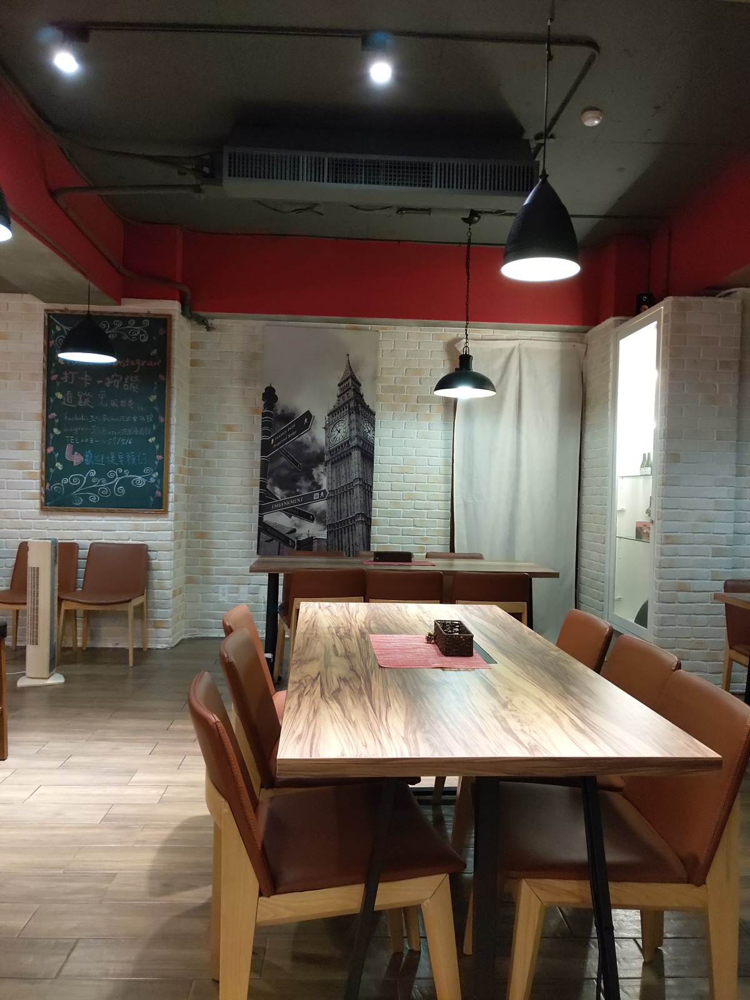 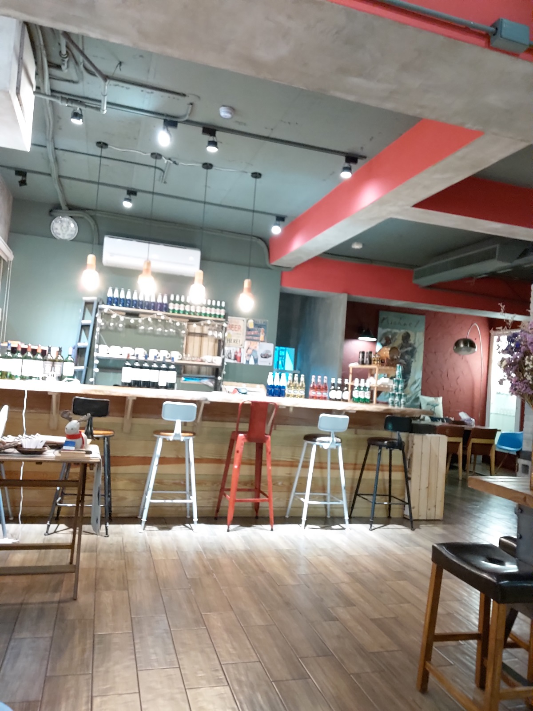
忘了拍菜單，借用官方網站的圖片。 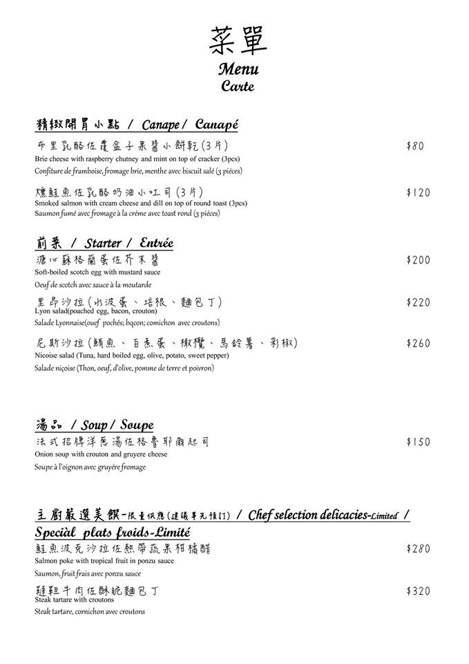 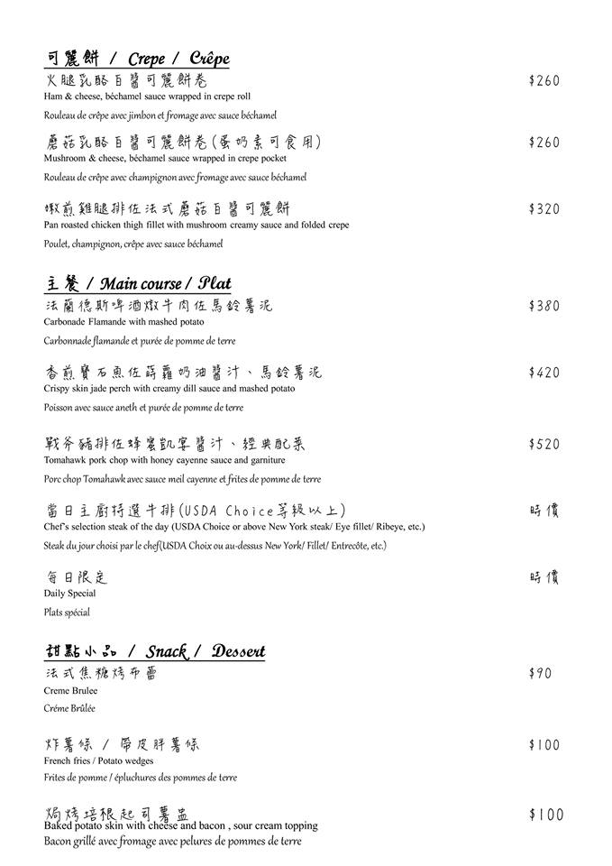 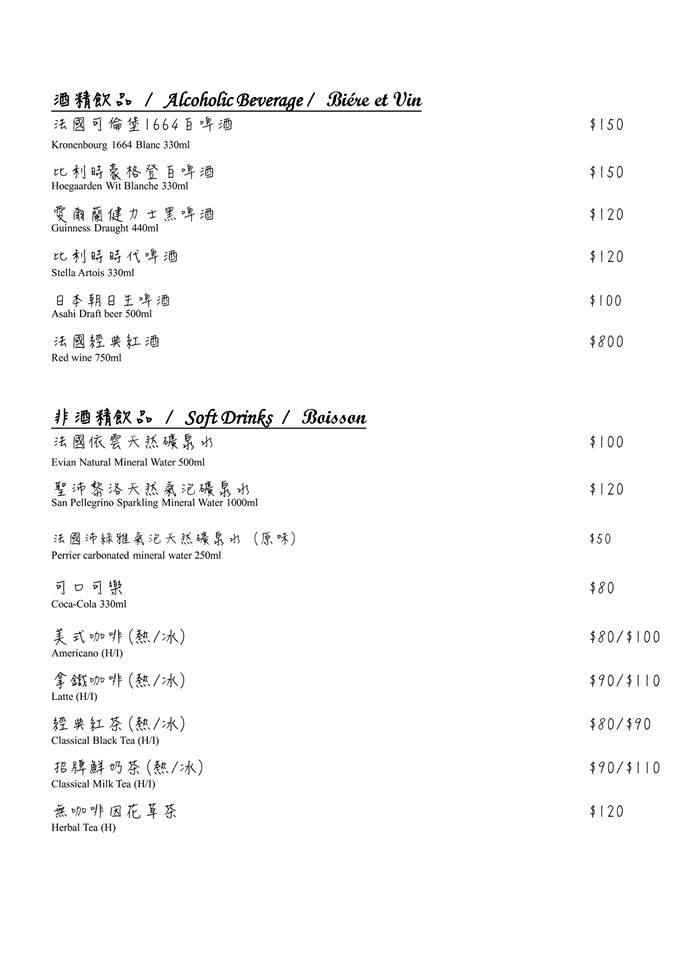
法式招牌洋蔥湯佐格魯耶爾起司，第一次喝的時候，感覺用高超的廚藝調出了泡麵的味道， 今天不像泡麵了，一樣好喝。 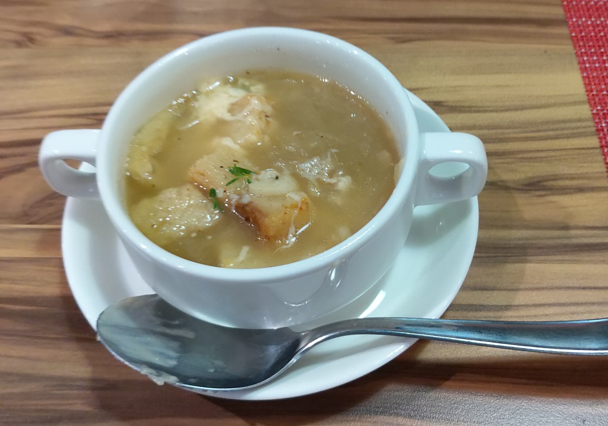
溏心蘇格蘭蛋佐芥末醬，這是送給壽星的，風味蠻特殊的，好吃。 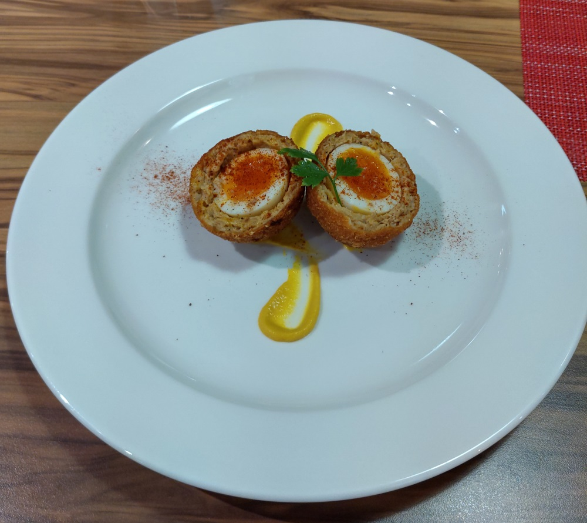
嫩煎雞腿排佐蘑菇白醬可麗餅，雞腿煎的不錯。 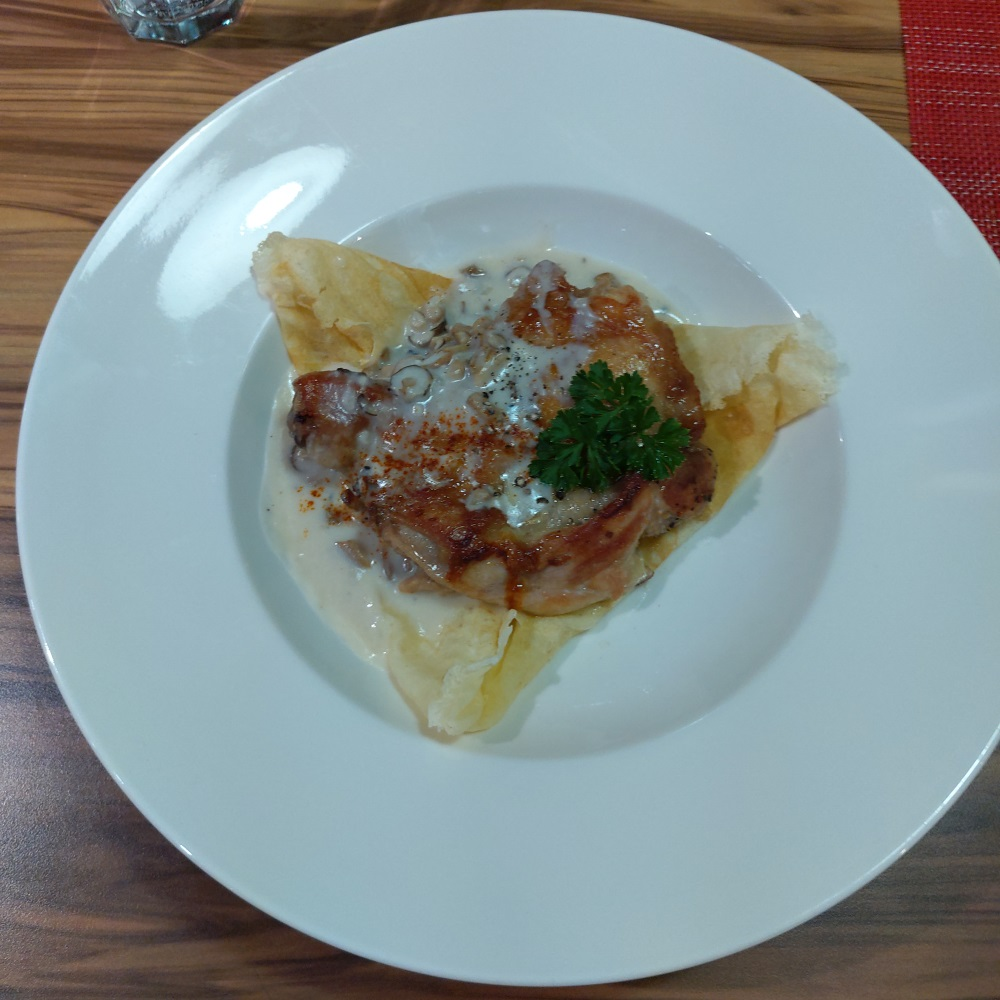
香煎寶石魚佐蒔蘿奶油醬汁、馬鈴薯泥。似乎有點非常輕微的魚腥味，也許是錯覺，不大確定。 醬汁，馬鈴薯泥蠻優秀的，整道菜還是算好吃。 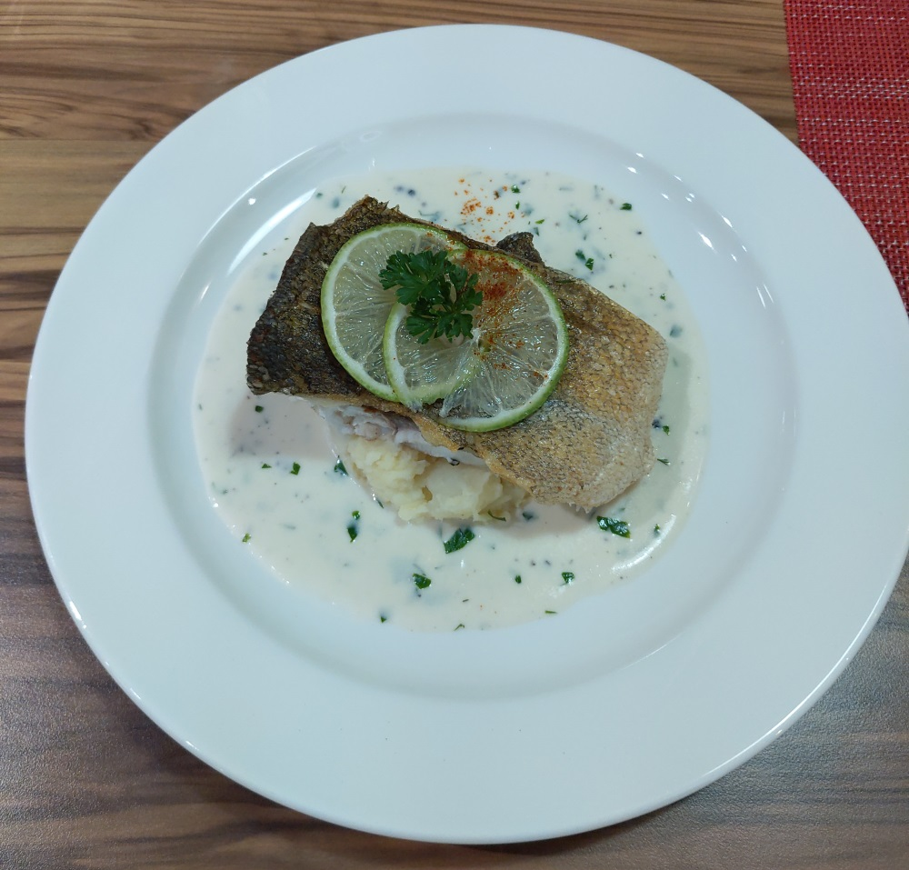
戰斧豬排佐蜂蜜凱宴醬汁、經典配菜。豬排很厚，所以花比較多時間煎，也有入味，好吃。經典配菜 原來是薯條，薯條比較沒特色。 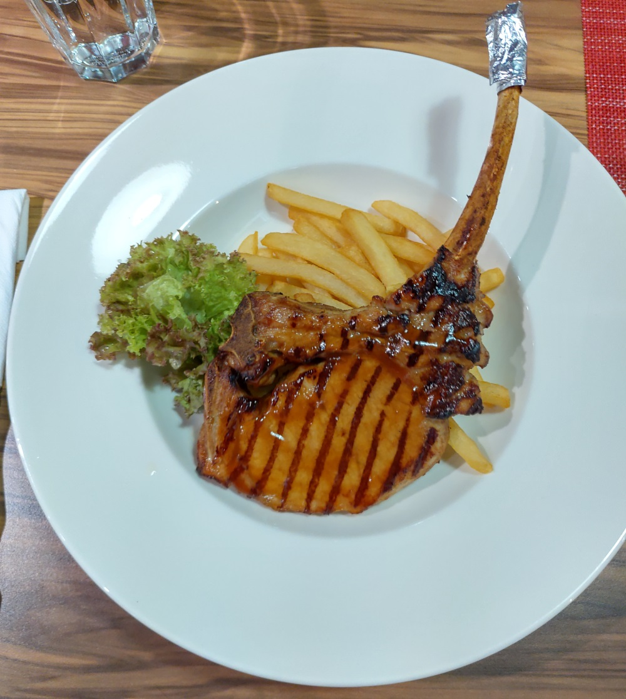
焗烤培根起司薯盅，一般人只有半個，但今天有壽星，老闆多送半個。不錯吃! 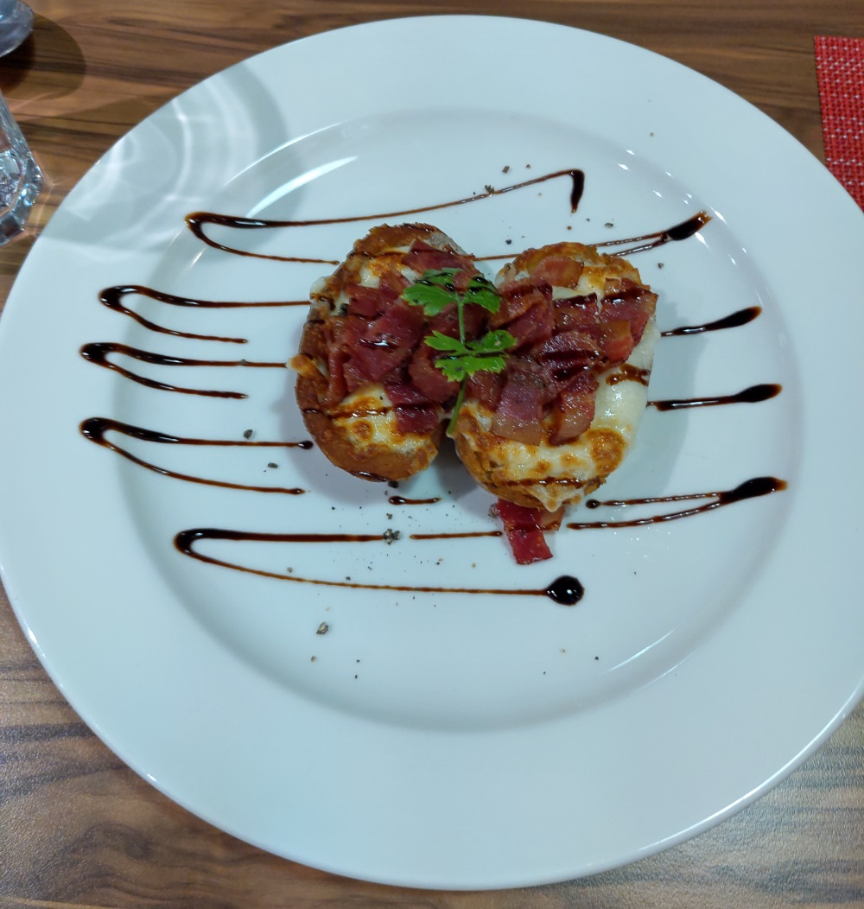
法式焦糖烤布蕾，飯後甜點，真材實料，好吃。 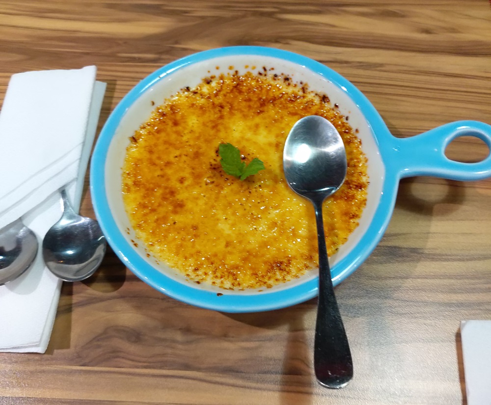
這間店，比較偏法國料理，難得老闆是一個為了廚藝，勇敢追求夢想的人，祝福他能 順利打造他心中理想的餐廳。